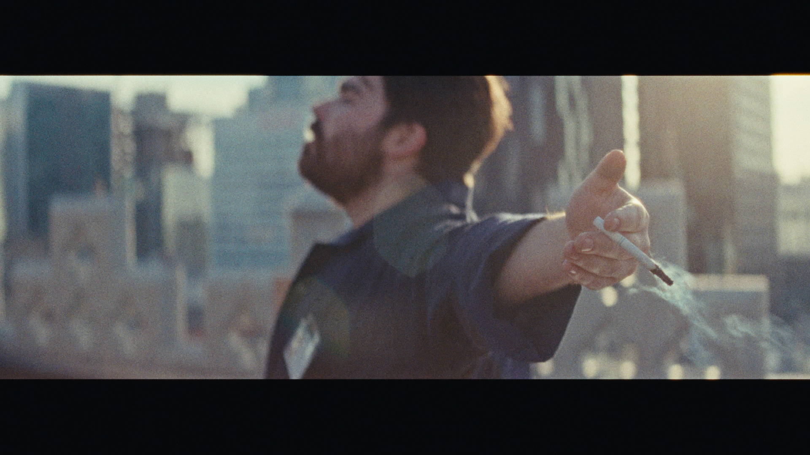

<!doctype html><html lang="en"><meta charset="utf-8"><meta name="viewport" content="width=device-width,initial-scale=1"><meta name="description" content="Martin Roméo · Director · Editor · Cinematographer"><title>Martin Roméo</title><link rel="stylesheet" href="style.css"><header><a class="brand" href="index.html">Martin Roméo</a><nav aria-label="Main navigation"><a href="reel.html">Demo reel</a><a href="projects.html">Projects</a><a href="bio.html">Bio</a><a href="media/cv.pdf" download="Martin-Romeo-CV.pdf">Download CV ↓</a><a href="index-fr.html" lang="fr" aria-label="Français">FR</a></nav></header><main><section class="hero"><video class="hero-video" data-src="media/music-reel.mp4" poster="media/hero.jpg" muted loop playsinline preload="none" aria-hidden="true"></video><button class="motion action" hidden data-play="Play background video" data-pause="Pause background video"></button><script src="motion.js" defer></script><div><span class="tag">Filmmaker · Winnipeg, Manitoba</span><h1>Martin <em>Roméo</em></h1><div class="credits" style="color:inherit">Director · Editor · Cinematographer</div><a class="action" href="reel.html">Demo reel ↗</a></div></section><section class="featured"><div class="section-heading"><div class="tag">/ 01–02</div><h2>Featured work</h2></div><div class="features"><article id="hafu"><a href="projects.html#hafu"><figure></figure><div class="project-caption"><h3>Hafu</h3><div class="credits">2025 · Unis TV · Cinematography</div></div></a></article><article id="champions"><a href="projects.html#champions"><figure></figure><div class="project-caption"><h3>Champions</h3><div class="credits">2025–2026 · TFO · Cinematography, season 2</div></div></a></article></div></section><section class="wrap"><div class="tag">/ 03–10</div><h2>Selected work</h2><div class="mosaic"><article id="survival"><a href="projects.html#survival"><figure></figure><div class="project-caption"><h3>Histoires de Survie</h3><div class="credits">2025–2026 · Radio-Canada · Cinematography (6 episodes) · Editing (1 episode)</div></div></a></article><article id="foodies"><a href="projects.html#foodies"><figure></figure><div class="project-caption"><h3>Métis Foodies</h3><div class="credits">2024–2025 · APTN · Direction (13 episodes)</div></div></a></article><article id="vide"><a href="projects.html#vide"><figure></figure><div class="project-caption"><h3>L’Appel du Vide</h3><div class="credits">2022 · Cinematography · Editing</div></div></a></article><article id="cmqd"><a href="projects.html#cmqd"><figure></figure><div class="project-caption"><h3>C’est moi qui décide!</h3><div class="credits">2023 · Unis TV · Cinematography · Editing, season 1</div></div></a></article><article id="secrets"><a href="projects.html#secrets"><figure></figure><div class="project-caption"><h3>Faouzia — Secrets</h3><div class="credits">2020 · Atlantic Records · Direction · Cinematography · Editing</div></div></a></article><article id="ghosts"><a href="projects.html#ghosts"><figure></figure><div class="project-caption"><h3>viisi × Chelsea Collins — Chasing Ghosts</h3><div class="credits">2023 · Atlantic Records · Direction · Editing</div></div></a></article><article id="crystalline"><a href="projects.html#crystalline"><figure></figure><div class="project-caption"><h3>Efflo — Crystalline</h3><div class="credits">2020 · Direction · Cinematography · Editing</div></div></a></article><article id="indi"><a href="projects.html#indi"><figure></figure><div class="project-caption"><h3>Indi Star — Visualizers</h3><div class="credits"></div></div></a></article></div><a class="action" href="projects.html">Explore credits ↗</a></section></main><script src="project-gallery.js" defer></script><footer><span>Martin Roméo · Winnipeg, MB</span><a href="mailto:themartinromeo@gmail.com">Contact ↗</a></footer></html>